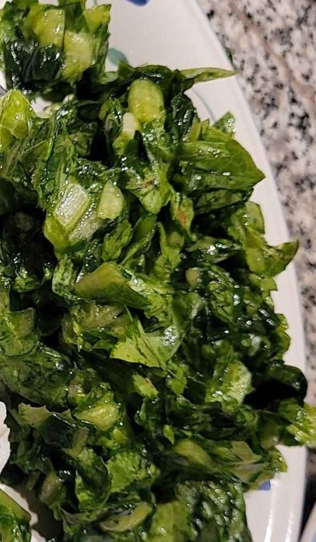

Ingredients
- 1 bunch - Green Onions
- Salt, To taste
- 1 head - Roman Lettuce
- 1 tsp - Apple cider vinager
- 2 Tbs - oil
Steps
- Slice the green onions and add them to a bowl
- Sprinkle with salt, about 1/2 tsp
- Smash the onions by hand until they release their juices
- Slice the lettuce and add it to the bowl of the smashed onions
- Smash the lettuce the until they also release their juices
- Drizzle with the oil and vinager and serve